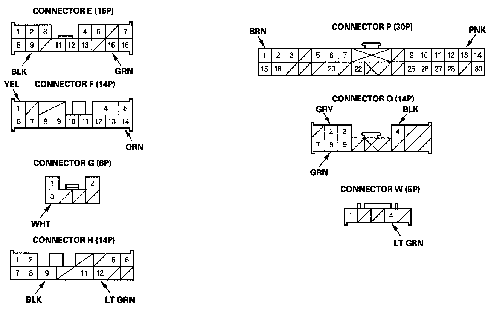
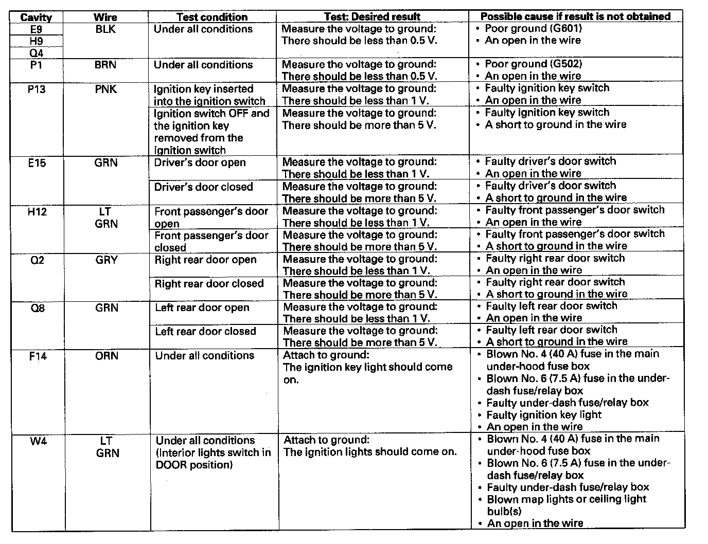
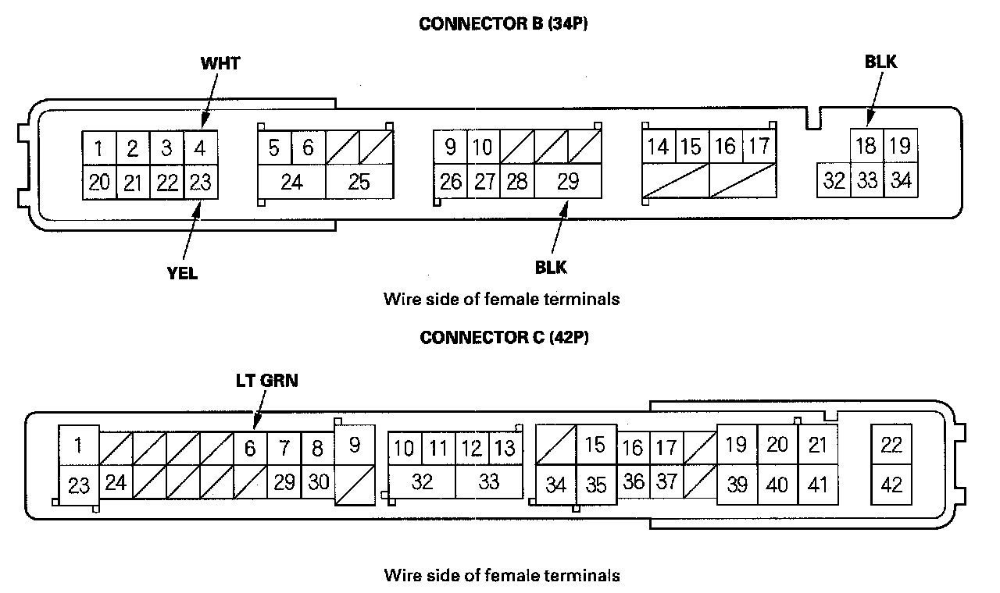
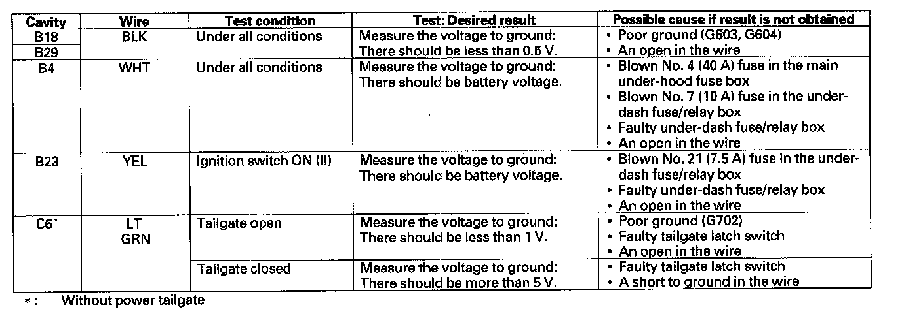
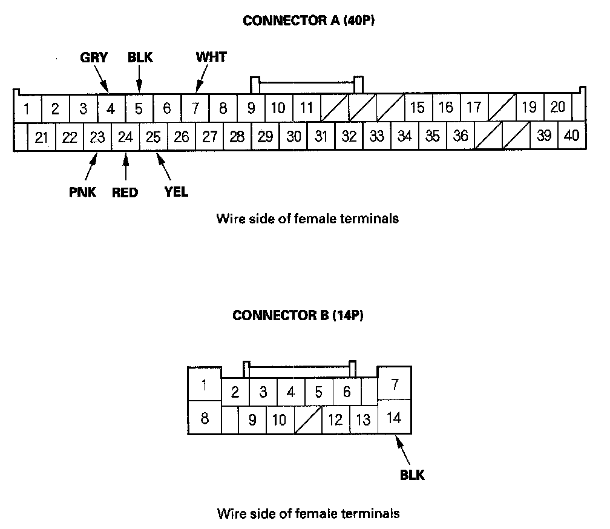
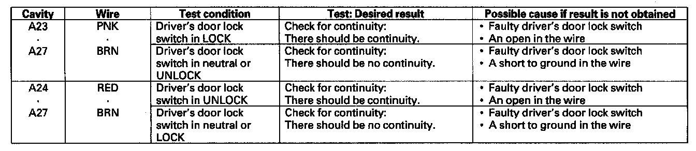
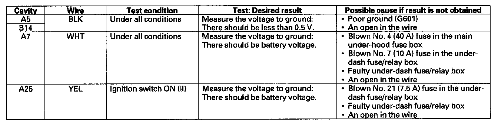

Control Unit Input Test
Control Unit Input TestNOTE: Before testing, troubleshoot the B-CAN System Diagnosis Test Mode A.
1. Turn the ignition switch OFF, and remove the left kick panel.

2. Disconnect the under-dash fuse/relay box connectors E, F, G, H, P, Q, and W.
NOTE: All connector views are wire side of female terminals.
3. Inspect the connector and socket terminals to be sure they are all making good contact.
- If the terminals are bent, loose or corroded, repair them as necessary and recheck the system.
- If the terminals look OK, go to step 4.

4. Reconnect the connectors, turn the ignition switch ON (II), and make these input tests at the connectors.
- If any test indicates a problem, find and correct the cause, then recheck the system.
- If all the input tests prove OK, go to step 5.
Rear Fuse/Relay Box
5. Turn the ignition switch OFF.
6. Remove the left rear trim.

7. Disconnect the rear fuse/relay box connector B (34P) and C (42P).
8. Inspect the connector and socket terminals to be sure they are all making good contact.
- If the terminals are bent, loose or corroded, repair them as necessary and recheck the system.
- If the terminals look OK, go to step 9.

9. Reconnect the connectors, then turn the ignition switch ON (II), and make these input tests at the connectors.
- If any test indicates a problem, find and correct the cause, then recheck the system.
- If all the input tests prove OK, go to step 10.
Driver's MPCS Unit
10. Turn the ignition switch OFF.
11. Remove the driver's door panel.

12. Disconnect the driver's MPCS unit connections.
13. Inspect the connector and socket terminals to be sure they are all making good contact.
- If the terminals are bent, loose or corroded, repair them as necessary and recheck the system.
- If the terminals look OK, go to step 14.

14. With the connectors still disconnected, make these input tests at the connectors.
- If any test indicates a problem, find and correct the cause, then recheck the system.
- If all the input tests prove OK, go to step 15.

15. Reconnect the connectors, and make these input tests at the connectors.
- If any test indicates a problem, find and correct the cause, then recheck the system.
- If all the input tests prove OK, go to step 16.
16. If multiple failures are found on more than one control unit, replace the under-dash fuse/relay box (includes the MICU). If input failures are related to a particular control unit, replace the control unit.